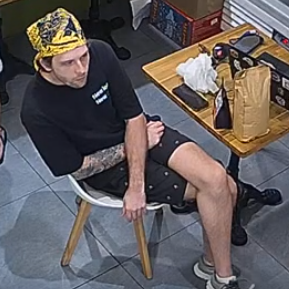
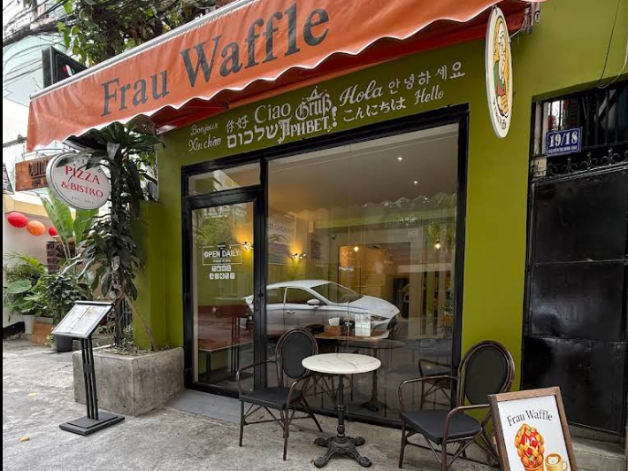
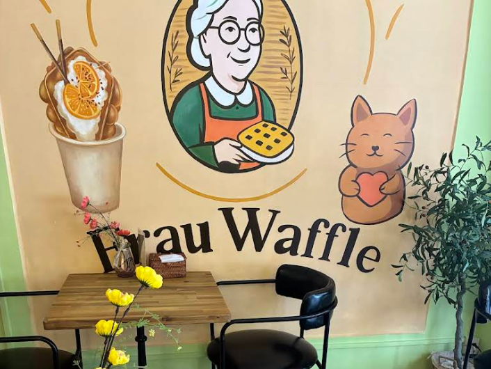
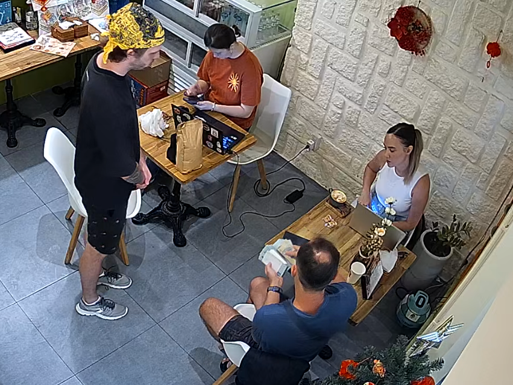
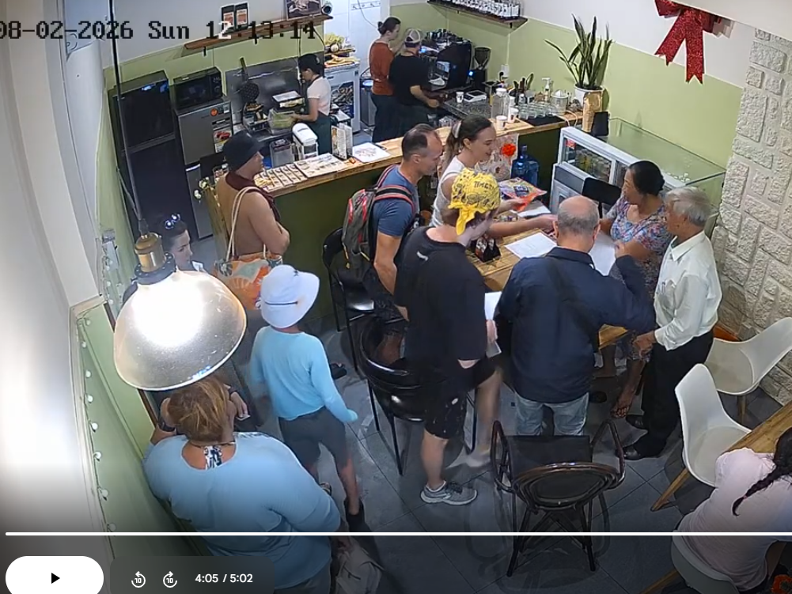
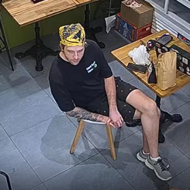
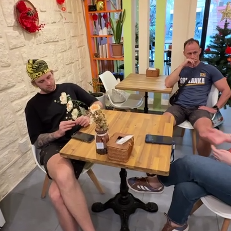
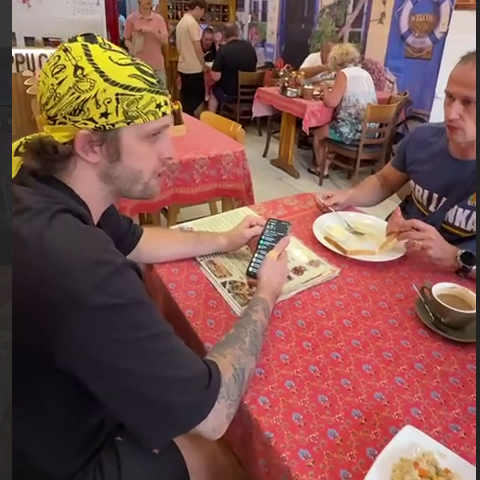
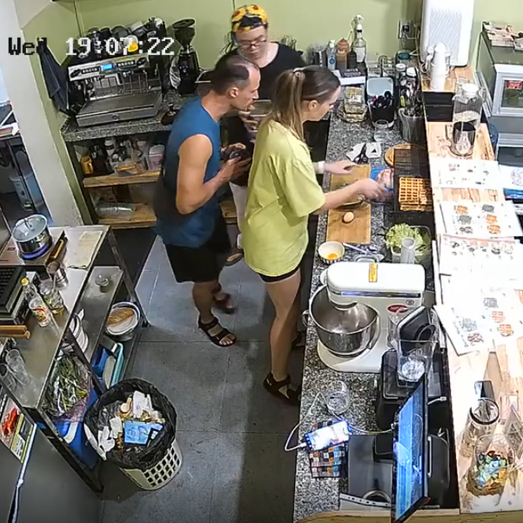
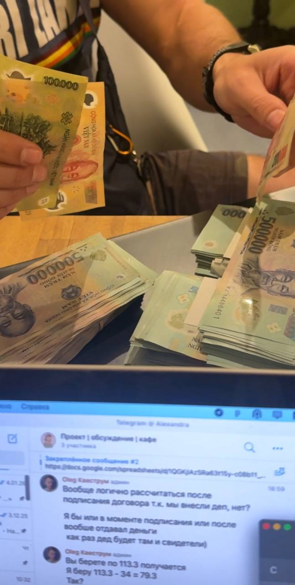

8 февраля 2026 года мы купили кафе в Нячанге. Через несколько недель один из партнеров заявил, что мы «гости» — и забрал бизнес себе.

Олег Богдан (Aleh Bohdan)
Гражданин Республики Беларусь
Телефон: +375 29 658 9947 (Telegram / Zalo)
Директор компании: CÔNG TY TNHH BELKA NT
Данного товарища можно встретить лично по адресу кафе ниже.
Кафе Frau Waffel в Нячанге.


В январе 2026 года мы договорились открыть кафе в Нячанге.
Мы нашли объявление о продаже действующего кафе Frau Waffel и приняли решение купить его вместе.
8 февраля 2026 года кафе было куплено за 340 000 000 VND.
Деньги предыдущим владельцам передавались лично в помещении кафе. Передача денег и подписание документов были зафиксированы камерами наблюдения.


По предложению Олега Богдана документы и договор аренды были оформлены на его компанию.
Мы согласились на это потому что:
— перед праздником ТЕТ практически невозможно быстро открыть новую компанию во Вьетнаме
— у него уже была зарегистрированная компания
Мы договорились использовать эту компанию временно и после ТЕТа оформить совместное владение.
Это решение было принято исключительно на основании доверия.
После покупки кафе мы начали работать и управлять им вместе.
Однако через несколько недель Олег Богдан заявил, что:
— мы не имеем никаких прав на бизнес
— мы всего лишь «гости»
После этого он сменил пароли доступа и полностью забрал контроль над кафе.
У нас имеются свидетели и подтверждающие материалы:
— видеозапись передачи денег
— видеозапись подписания договора
— полная выгрузка переписки
— электронные документы учета прихода и расхода денег, а также чеки ежедневных закрытий смен.




На фото ниже — снимок экрана с обсуждением разделения суммы покупки кафе поровну (по 113.3 млн VND на каждого). Важно: в официальной выгрузке переписки этих сообщений нет, так как Олег Богдан предусмотрительно удалил их, что доказывает его изначальный злой умысел.

Полная видеозапись передачи денег может быть предоставлена по запросу.
По данному факту было подано заявление в полицию. Однако они сочли имеющиеся доказательства недостаточными для открытия уголовного дела.
Поэтому вся наша надежда — на сообщество живущих тут людей в плане распространения информации о недобросовестном человеке и недопущении его обогащения таким преступным путем.
Все подробности инцидента, а также возможность связаться с нами — в наших Instagram-аккаунтах: